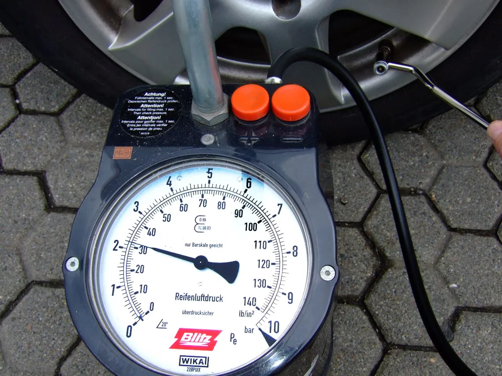
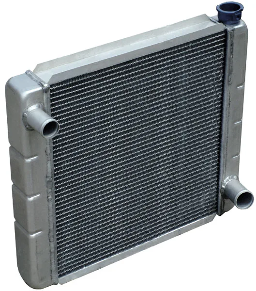
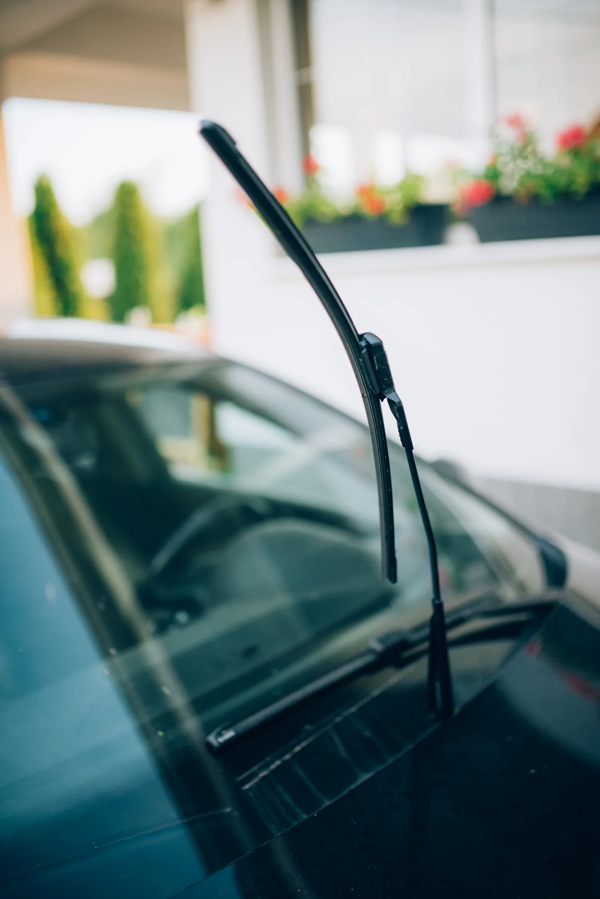
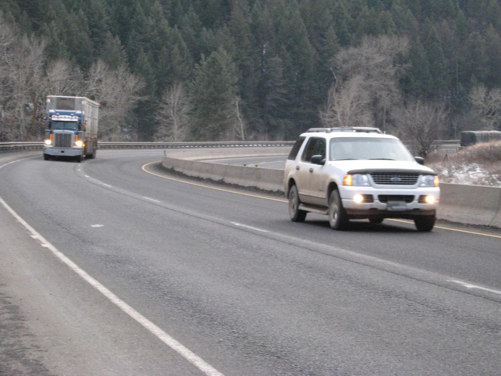
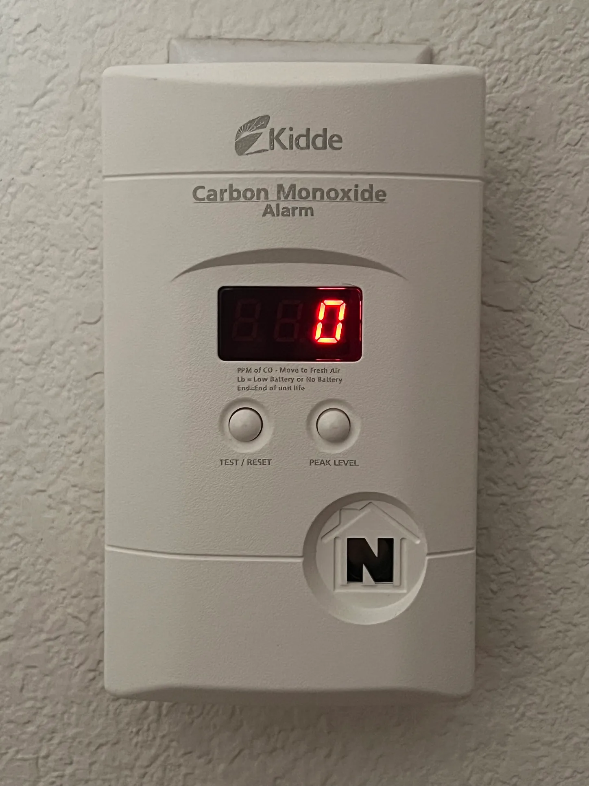

▲ 가을철에는 일교차로 타이어 공기압이 자연스럽게 떨어진다. 장거리 출발 전 공기압부터 확인하자 ⓒ JEG14 / Wikimedia Commons (Public Domain)
작년 가을엔 아무 문제 없었으니 이번에도 괜찮을 거라고 생각하기 쉽다. 하지만 타이어 공기압은 계절이 바뀔 때마다 자연히 달라지고, 여름 내내 혹사당한 냉각수와 브레이크는 표시가 나지 않을 뿐 이미 소모돼 있는 경우가 많다.
특히 차박은 일반적인 장거리 운전 점검에 더해 차 안에서 밤을 보낸다는 변수가 하나 더 붙는다. 소방청 통계에 따르면 캠핑장 가스 중독 사고는 2021년 49건에서 2023년 65건으로 늘었고, 사고 원인 상당수가 부탄가스 난로나 온수매트였다. 출발 전 타이어부터 텐트 안 경보기까지, 순서대로 점검해봤다.
1. 타이어 — 공기압과 트레드부터 확인한다
가을철 일교차가 커지면 타이어 공기압은 저절로 떨어진다. 기온이 낮아지면 타이어 안 공기가 수축하기 때문에, 여름에 맞춰뒀던 공기압이 가을에는 부족해져 있을 수 있다.
대한민국 정책브리핑이 소개한 장거리 운행차량 안전점검 포인트에 따르면, 공기압은 제조사 권장 최대 공기압의 80% 수준이 적정하다. 공기압이 부족한 채로 짐을 가득 싣고 장거리를 달리면 타이어 옆면 손상(사이드월 파열)으로 이어질 위험이 커진다.
▲ 타이어 공기압은 냉간 상태(주행 전)에서 측정해야 정확하다 ⓒ JEG14 / Wikimedia Commons (Public Domain)
트레드(홈) 마모 상태도 함께 확인해야 한다. 자동차관리법령상 타이어 트레드의 마모 한계는 1.6mm로 정해져 있으며, 타이어 옆면의 삼각형(▲) 표시를 따라가면 트레드 홈 안에 마모한계선이 나온다. 마모한계선과 접지면 높이가 같아졌다면 교체 시점이다.
✅ 100원짜리 동전으로 하는 간이 점검법
· 동전을 이순신 장군 감투가 아래로 향하게 트레드 홈에 끼운다
· 감투가 절반 이상 보이면 마모가 상당히 진행된 것 — 교체를 검토할 것
· 짐을 가득 싣고 장거리·비포장 임도까지 다녀올 계획이라면 스페어타이어와 휠 렌치도 함께 확인
2. 냉각수·부동액 — 여름을 견딘 흔적을 확인한다
냉각수는 여름 폭염 동안 이미 최대 부하를 받은 상태다. 가을 장거리 주행에서 엔진 과열로 이어지지 않으려면 출발 전 잔량과 색을 확인해야 한다.
📍 반드시 엔진이 식은 상태에서 확인
라디에이터 캡이나 보조탱크는 주행 직후 뜨거운 상태에서 열면 화상 위험이 있다. 시동을 끄고 충분히 식힌 뒤 보조탱크의 MIN~MAX 눈금 사이에 냉각수가 있는지 확인하고, 주차했던 자리에 누수 흔적이 있는지도 함께 살핀다.

▲ 라디에이터는 냉각수를 식혀 엔진 과열을 막는 핵심 부품이다 ⓒ Bill Wrigley / Wikimedia Commons (Public Domain)
냉각수를 보충할 때는 색이 다른 부동액을 섞지 않는 것이 중요하다. 초록·파랑·분홍·노랑 등 색상은 제조사마다 성분 기준이 달라, 서로 다른 계열을 섞으면 화학반응으로 침전물이 생겨 라디에이터 통로를 막을 수 있다. 보충 시에는 색이 아니라 규격(제조사 지정 냉각수인지)을 먼저 확인해야 한다.
3. 브레이크·와이퍼·워셔액 — 장거리 전 소모품 점검
브레이크는 계기판에 경고등이 뜨지 않아도 서서히 닳는 부품이다. 정책브리핑 기준으로는 브레이크 패드는 1만km 주행 시 점검, 브레이크 오일은 3만~4만km 주기로 교환이 권장된다. 제동 시 평소와 다른 소음이나 밀리는 느낌이 있다면 주행거리와 무관하게 점검이 필요하다.
| 항목 | 확인 기준 |
|---|---|
| 타이어 공기압 | 제조사 권장 최대 공기압의 80% 수준, 냉간 상태에서 측정 |
| 타이어 마모 | 트레드 홈 깊이 1.6mm 이하(마모한계선 도달) 시 교체 |
| 브레이크 패드 | 1만km 주행마다 점검 권장 |
| 브레이크 오일 | 3만~4만km 주기로 교환 권장 |
| 와이퍼 | 작동 시 줄무늬·소음 발생하면 교체 대상 |
| 냉각수 | 엔진 식은 상태에서 보조탱크 MIN~MAX 눈금 확인, 색 다른 제품과 혼용 금지 |
와이퍼는 출발 전 실제로 한 번 작동해봐야 한다. 고무날이 경화되면 물기를 밀어내지 못하고 줄무늬(스트리킹)가 남는데, 이 상태로 야간 산길이나 안개 낀 구간을 달리면 시야 확보가 급격히 어려워진다. 워셔액도 미리 채워둬야 한다 — 벌레 자국이나 흙먼지가 많은 야외 캠핑장 진입로에서는 워셔액 소모가 평소보다 훨씬 빠르다.

▲ 와이퍼는 눈으로 직접 작동시켜 줄무늬가 남는지 확인하는 것이 가장 정확하다 ⓒ Shixart1985 / Wikimedia Commons (CC BY 2.0)
4. 전조등·안개등 — 해 짧아지는 계절, 야간 대비
가을은 일몰 시간이 빨라지는 계절이다. 캠핑장으로 이동하다 보면 계획보다 늦게 어두워진 산길이나 국도를 달리게 되는 일이 잦다. 출발 전 전조등과 안개등이 좌우 모두 정상 점등되는지, 밝기 차이는 없는지 확인해야 한다.

▲ 산간 국도는 일교차로 인한 새벽 안개가 잦다. 안개등은 저속 주행 시에만 사용하고 앞차와의 거리를 넓게 유지해야 한다 ⓒ Oregon Department of Transportation / Wikimedia Commons (CC BY 2.0)
📍 안개등은 항상 켜두는 등화가 아니다
안개등은 안개·폭우 등으로 시야가 크게 제한될 때만 사용하는 보조 등화다. 맑은 날 습관적으로 켜두면 뒤차나 마주 오는 차량의 눈부심을 유발할 수 있다. 또한 헤드램프 렌즈가 뿌옇게 흐려졌다면 광량이 크게 줄어드는 만큼, 출발 전 렌즈 상태도 함께 살펴야 한다.
5. 차박 특화 안전 — 일산화탄소, 차 안에서는 더 치명적이다
일반 장거리 운전과 차박이 갈라지는 지점이 바로 여기다. 차 안이나 텐트 안에서 밤을 보내는 차박·캠핑은 밀폐된 공간에서 연료를 태우는 상황이 생기기 쉽고, 이는 일산화탄소 중독이라는 별도의 위험으로 이어진다.
소방청 통계에 따르면 캠핑장 가스 중독 사고는 2021년 49건 → 2022년 39건 → 2023년 65건으로 다시 늘었다. 사고는 주로 기온이 떨어지는 늦가을~겨울철(11월~1월)에 집중되며, 부탄가스 난로와 온수매트가 대표적인 원인으로 꼽힌다. 일산화탄소는 무색·무취·무미의 기체라 중독 상태에서도 스스로 알아차리기 어렵다.
⚠️ 차박·텐트 안에서 반드시 지킬 것
· 일산화탄소 경보기를 차량 또는 텐트 안에 비치 — 일산화탄소는 위로 뜨는 성질이 있어 경보기는 상단부에 두는 것이 효과적
· 부탄가스 난로·온수매트 등 연소기구는 KC 인증 제품인지 먼저 확인
· 연소기구를 켠 채로 차량 시동을 끄고 완전히 밀폐된 상태로 잠들지 않기 — 자주 환기
· 두통·어지럼증·메스꺼움이 느껴지면 즉시 야외로 이동해 신선한 공기를 마시고 119에 신고

▲ 일산화탄소 경보기는 무색·무취 가스를 감지해 알려주는 사실상 유일한 수단이다 ⓒ TaurusEmerald / Wikimedia Commons (CC BY-SA 4.0)
참고로 보조배터리(파워뱅크)로 전기장판이나 온풍기를 오래 돌리는 문제는 이미 여러 차박 전력 관련 콘텐츠에서 다룬 배터리 방전 이슈에 가깝다. 이 글에서는 그보다 연소기구로 인한 가스 중독 쪽에 초점을 맞췄다 — 전기 히터보다 부탄가스 난로·온수매트가 훨씬 더 직접적인 인명 사고로 이어지기 때문이다.
6. 출발 전 비상용품 마지막 점검
차량 자체 점검이 끝났다면, 트렁크에 실어야 할 비상용품도 함께 챙긴다.
✅ 출발 전 트렁크 체크리스트
· 고장자동차 표지(안전삼각대) — 도로교통법상 비치·설치 의무 대상
· 일산화탄소 경보기(건전지 여유분 포함)
· 손전등과 여분 배터리 — 가로등 없는 야영지 대비
· 점프 케이블 또는 휴대용 점프스타터
· 타이어 수리 키트 또는 스페어타이어·휠 렌치
· 담요, 여벌 옷 — 새벽 기온이 낮에 비해 크게 떨어지는 계절 특성 고려
타이어 마모한계선과 점검 방법에 대한 더 자세한 안내는 한국타이어의 안전점검 가이드에서 확인할 수 있다. 타이어 마모한계 가이드 바로가기
7. 요약
가을철 차박·캠핑 전 차량 점검은 일반 장거리 운전 점검에서 시작한다. 타이어 공기압(권장 최대치의 80%)과 마모한계선(1.6mm), 냉각수(엔진 식은 상태에서 MIN~MAX 확인), 브레이크(패드 1만km·오일 3만~4만km), 와이퍼·워셔액, 전조등·안개등까지 출발 전 순서대로 확인해야 한다.
차박은 여기에 한 가지가 더 붙는다. 차 안이나 텐트 안에서 밤을 보내는 만큼 일산화탄소 중독 위험을 별도로 관리해야 한다. 캠핑장 가스 중독 사고는 2023년 65건으로 늘었고, 늦가을부터 겨울까지 집중된다. 일산화탄소 경보기 비치, KC 인증 연소기구 사용, 잦은 환기는 선택이 아니라 필수다.